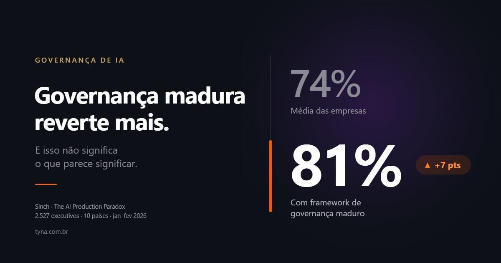

Em destaque Governança de IAPor que quem tem governança madura reverte mais agente de IA
74% das empresas já desligaram um agente de IA. Entre as que têm governança madura, 81%. O número mais alto não significa o que parece significar.
Blog · 7 artigos
Política de uso, comitê, AI Gateway, LGPD e agentes em produção — análise própria da Tyna, escrita por quem implanta e não só audita.

Em destaque Governança de IA74% das empresas já desligaram um agente de IA. Entre as que têm governança madura, 81%. O número mais alto não significa o que parece significar.
Instruções, contexto, memória e tarefas programadas têm funções diferentes nos projetos do Claude. O que vai em cada campo, com modelos prontos para adaptar.
A maioria dos comitês de IA se reúne e não decide nada. O que separa um comitê com poder real de um que só documenta o que já foi decidido.
AI Gateway não é mais uma ferramenta — é o ponto único de acesso, custo e auditoria por onde as outras passam. O que ele resolve, na prática.
A maioria das políticas de uso de IA nunca é lida depois de assinada. O que separa a que funciona da que vira arquivo morto.
Cinco cenários que vazam dado todo dia, os três caminhos técnicos pelos quais a informação escapa, e o que muda — e o que não muda — no plano corporativo.
Shadow AI é o uso de ferramentas de IA sem o conhecimento da empresa — e já acontece na sua. Entenda os riscos reais e o que fazer a respeito.